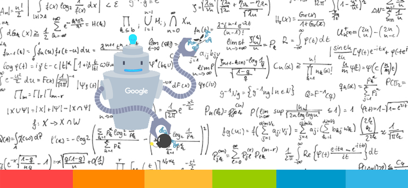
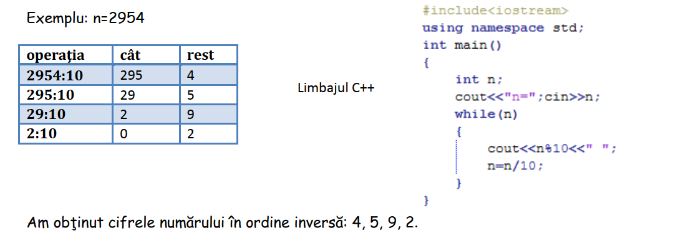
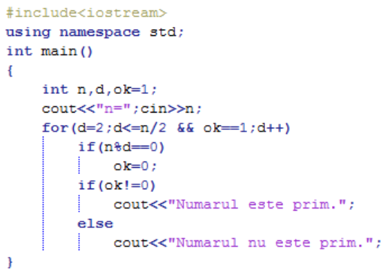
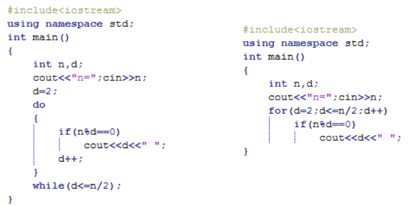
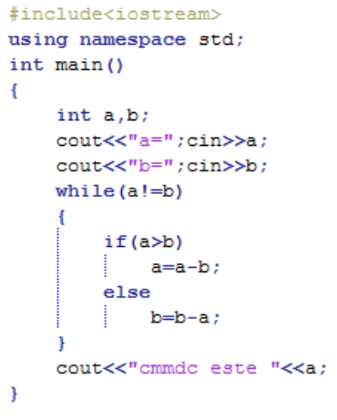
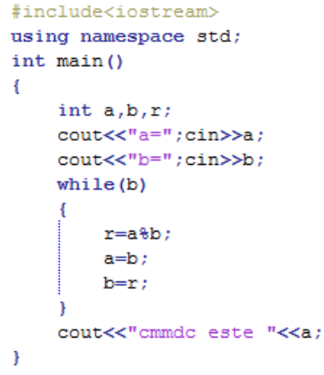
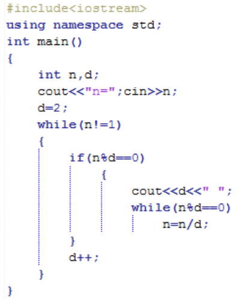
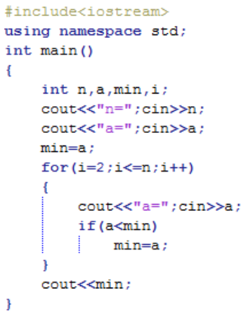
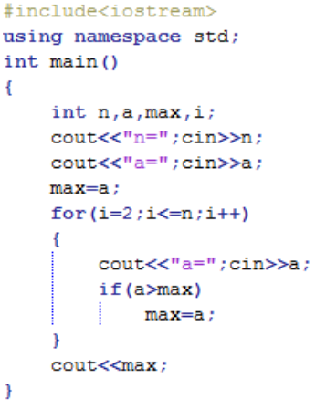

|
 |
Se va folosi rezultatul din matematică conform căruia restul împărţirii la 10 al unui număr întreg pozitiv îl reprezintă ultima cifră a numărului (cea mai puţin semnificativă), iar câtul împărţirii la 10, numărul fără ultima cifră. |
Matematica ne spune că un număr este prim dacă are doar doi divizori, pe 1 şi numărul însuşi, deci când nu are divizori proprii.Dacă numarul are cel puţin un divizor propriu, atunci numărul nu este prim. |
|  |  |
|  |
Putem continua cu exemplele, dar şi din acestea se poate
observa că:
Este suficient să testăm care din valorile cuprinse între 2 şi
[n/2] împart exact numărul n dat şi astfel identificăm, pe
rând, divizorii proprii ai numărului, care vor putea fi
prelucraţi conform cerinţelor enunţului.
Exemple cu cele două structuri repetitive: |
- ALGORITMUL LUI EUCLID -
|  | Să presupunem că avem două numere naturale a şi b, pentru care trebuie să aflăm cel mai mare divizor comun(cmmdc).Se reţine în variabila r restul împărţirii lui a la b.Variabila a ia valoarea variabilei b iar b ia valoarea restului obţinut în urma împărţirii lui a la b. Aceste operaţii se execută cât timp b este diferit de 0. Cel mai mare divizor comun va fi variabila a. |  |
|  | Algoritm:
|
Se presupune că primul număr citit este maximul. Se citesc apoi, pe rând, numerele şi la fiecare pas se compară numărul citit cu maximul existent. Dacă numărul citit este mai mare decât maximul, se înlocuieşte maximul. | Se presupune că primul număr citit este minimul. Se citesc apoi, pe rând, numerele şi la fiecare pas se compară numărul citit cu minimul existent. Dacă numărul citit este mai mic decât minimul, se înlocuieşte minimul. |
|  |  |